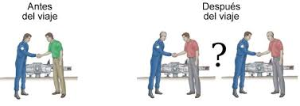
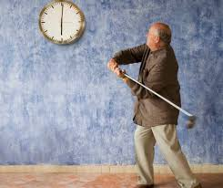

Paradoja de la Noche Oscura
La Paradoja de la Noche Oscura es una pregunta fascinante que surge del misterio del universo: ¿por qué el cielo está oscuro de noche si hay tantas estrellas? Al principio, puede parecer que no tiene sentido, ya que si el universo está lleno de estrellas, deberíamos ver luz por todos lados. Sin embargo, la explicación está relacionada con el tamaño del universo, su expansión y cómo viaja la luz a través del espacio.
Imagina que el universo es como un enorme cuarto lleno de velas encendidas. Si te acercas a una vela, puedes ver su luz de inmediato. Pero, si te alejas mucho de la vela, la luz comienza a desvanecerse hasta que ya no puedes verla, aunque la vela siga encendida. Ahora, si hay muchas velas en ese cuarto, pero están tan lejos que su luz no puede llegar hasta ti, el cuarto se verá oscuro, aunque las velas estén iluminadas.
En el universo, aunque hay millas de millones de estrellas, algunos están tan distantes que la luz de esas estrellas no puede llegar hasta nosotros. El universo no es estático ni infinito, sino que está en constante expansión. La luz de las estrellas más lejanas tiene que recorrer distancias enormes, y debido a la expansión del espacio, algunas de esas estrellas están tan lejos que su luz nunca nos alcanza. Además, la luz de las estrellas más distantes se desplaza hacia longitudes de onda más largas (lo que se llama desplazamiento al rojo ), lo que también contribuye al oscurecimiento del cielo.
- La habitación oscura con velas: Imagina que estás en una habitación llena de velas encendidas. Si te acercas a una vela, la verás brillar claramente. Pero si te alejas demasiado, su luz se irá desvaneciendo hasta que, eventualmente, ya no podrás ver nada. Aunque hay muchas velas en el cuarto, si están demasiado lejos, no puedes ver su luz. El universo es algo parecido: aunque hay muchísimas estrellas, algunas están tan lejos que la luz no llega a nosotros, y por eso, el cielo se ve oscuro.
- El árbol con luces navideñas: Imagina que hay un árbol de Navidad con millas de luces brillando. Si estás cerca, puedes ver todas las luces claramente. Pero, si te alejas mucho, las luces se van haciendo más pequeñas y tenues hasta que, a una gran distancia, ya no puedes verlas. De manera similar, el universo tiene muchas "luces" (estrellas), pero la luz de las estrellas más lejanas no puede alcanzarnos, lo que deja el cielo oscuro.
La razón por la que el cielo está oscuro a pesar de haber tantas estrellas se debe a que el universo es finito en el tiempo (es decir, tiene una edad limitada) y está en expansión . Aunque las estrellas existen en grandes cantidades, algunas están tan alejadas que la luz de esas estrellas ha tardado demasiado tiempo en llegar a nosotros, o simplemente está demasiado lejos para alcanzarnos. Además, debido a la expansión del universo, la luz de las estrellas más distantes se estira y se desplaza hacia el rojo, lo que hace que se vuelva menos visible.
En resumen, aunque hay un número impresionante de estrellas en el universo, muchas de ellas están tan alejadas que no podemos ver su luz, lo que hace que el cielo nocturno sea oscuro. Esta es la clave para entender la Paradoja de la Noche Oscura : el universo está en expansión, las estrellas están muy distantes, y la luz de las más lejanas no llega hasta nosotros, haciendo que el cielo parezca oscuro en lugar de brillante.
Paradoja de la hoja de té
La Paradoja de la Hoja de Té es un concepto que proviene de la mecánica de fluidos y describe un fenómeno que ocurre cuando pones una hoja de té flotando en un líquido, como en una taza de té. La paradoja radica en que, a medida que el té se agita, la hoja de té comienza a moverse hacia el centro del vaso en lugar de moverse hacia las paredes, como podríamos esperar si solo pensáramos en la forma en que los objetos tienden a ir hacia los bordes debido a la fuerza centrífuga.
Lo interesante de esta paradoja es que en un sistema rotatorio, como cuando estamos girando el té en la taza, la hoja de té no sigue la lógica de la rotación hacia las paredes (como ocurre con otros objetos que se desplazan hacia afuera cuando giran). En cambio, la hoja se dirige hacia el centro del vaso. Este comportamiento ocurre porque, en el caso de un fluido en movimiento, las fuerzas involucradas en la dinámica de la rotación y la interacción entre el fluido y el objeto (la hoja) hacen que la hoja se mueva hacia el centro.
La paradoja puede ser explicada por la dinámica de los flujos en la taza. El agua en el centro de la taza se mueve más lentamente que el agua cerca de las paredes, lo que genera una especie de "vacío" en el centro que arrastra la hoja de té hacia él. A pesar de la fuerza centrífuga que normalmente empuja los objetos hacia afuera, la hoja de té se ve influenciada por las corrientes y el movimiento del líquido, lo que resulta en que se mueva hacia el centro de la taza.
Para entenderlo con una analogía, imagina que estás en un carrusel (un tipo de rueda giratoria). Si solo te paras en el borde, sientes que eres empujado hacia afuera debido a la velocidad de la rotación. Sin embargo, si en lugar de estar en el borde, te pones en el centro del carrusel, verás que no experimentas esa misma sensación de "empuje". Algo similar pasa con la hoja de té: en lugar de ir hacia las paredes, va al centro, como si estuviera en el lugar más tranquilo del movimiento.
Es un buen ejemplo de cómo las interacciones entre los objetos y su entorno (en este caso, el líquido) pueden generar resultados que no esperaríamos de forma intuitiva.
Paradoja de los gemelos
La Paradoja de los Gemelos es una famosa consecuencia de la teoría de la relatividad especial de Einstein. Esta paradoja describe una situación en la que dos gemelos, uno de los cuales viaja al espacio a una velocidad cercana a la de la luz, y el otro se queda en la Tierra, experimentan el paso del tiempo de manera diferente.
La idea básica es que el gemelo que viaja en la nave espacial (en movimiento) experimenta el dilata del tiempo, lo que significa que su tiempo pasa más lentamente que el del gemelo que permanece en la Tierra. Cuando el gemelo viajero regresa a la Tierra, descubrirá que ha envejecido menos que su gemelo que se quedó en casa, a pesar de que ambos comenzaron como gemelos idénticos. Esto se debe a que, a medida que viaja a altas velocidades, el tiempo para el gemelo en la nave se "altera" y transcurre más despacio en comparación con el gemelo en reposo en la Tierra.
La paradoja está en que, en principio, se podría pensar que ambos gemelos se están moviendo en relación el uno con el otro, por lo que debería ocurrir lo mismo para los dos. Sin embargo, según la teoría de la relatividad especial, el gemelo que viaja a alta velocidad experimenta un tiempo más lento debido a su movimiento. Este es un efecto real y ha sido comprobado experimentalmente con relojes atómicos en aviones y satélites.
Una forma de entenderlo con una analogía es pensar en un tren muy rápido que viaja de una ciudad a otra. Si estuvieras dentro de ese tren, no sentirías que te estás moviendo, porque no notarías nada que indique tu velocidad. Pero para una persona que está fuera del tren, podría ver que el tren se mueve a gran velocidad. Ahora, imagina que tienes un reloj en el tren. Desde el punto de vista de la persona fuera del tren, el reloj del tren parecería ir más despacio porque está moviéndose tan rápido. Para la persona en el tren, el reloj parece funcionar con normalidad. Sin embargo, cuando comparan los relojes al final, la persona fuera del tren verá que el reloj dentro del tren ha avanzado menos tiempo.
La paradoja se resuelve reconociendo que el gemelo viajero está en un marco de referencia diferente al de su gemelo en la Tierra. El gemelo en la nave experimenta una aceleración y desaceleración que cambia su situación, y esto es lo que provoca que su reloj "se atrase" en comparación con el reloj del gemelo en la Tierra. Es una de las implicaciones más sorprendentes de la relatividad especial, que el tiempo no es algo absoluto y fijo, sino que puede variar dependiendo de la velocidad a la que te muevas.
Paradoja del gato de Schrodinger
La Paradoja del Gato de Schrödinger es una famosa propuesta que el físico austriaco Erwin Schrödinger presentó en 1935 para ilustrar las extrañas y contraintuitivas implicaciones de la mecánica cuántica. La paradoja describe una situación en la que un gato, dentro de una caja cerrada, está en un estado de "superposición cuántica", es decir, en dos estados a la vez, hasta que se observe. Es una forma de mostrar lo que podría ocurrir cuando aplicamos las reglas de la mecánica cuántica a objetos macroscópicos, como un gato.
Imagina que en la caja hay un átomo radiactivo, que tiene una probabilidad de desintegrarse o no en un tiempo determinado. Si el átomo se desintegra, libera una partícula que activa un mecanismo que mata al gato. Si no se desintegra, el gato sigue vivo. Según la mecánica cuántica, hasta que no se abra la caja y se observe el estado del gato, este está en una "superposición" de estar simultáneamente vivo y muerto. Es decir, el gato no está simplemente vivo o muerto, sino que está en una mezcla de ambos estados, hasta que se observe (o mida) de alguna manera.
La paradoja es que la mecánica cuántica predice que, a nivel subatómico, las partículas pueden estar en múltiples estados a la vez (lo que se llama superposición), pero a nivel macroscópico, como con un gato, esperaríamos que el gato esté claramente vivo o muerto, no en ambos estados al mismo tiempo. Esto crea una contradicción, porque nos resulta difícil imaginar cómo una regla que funciona a escala subatómica podría aplicarse a objetos grandes y visibles como un gato.
Para entenderlo mejor con una analogía, imagina que tienes una moneda. Si la lanzas, la mecánica cuántica sugiere que, mientras no la observes, la moneda está en un estado de superposición, siendo simultáneamente cara y cruz. Solo cuando miras la moneda, el estado se "colapsa" a una de las dos opciones: cara o cruz. Aplicado al gato, mientras no abramos la caja, el gato está en un estado de superposición de estar vivo y muerto, como la moneda que está en "ambos estados" hasta que se observa.
La paradoja en realidad no es una verdadera situación en la que un gato pueda estar vivo y muerto al mismo tiempo, sino una forma de ilustrar lo extraño que resulta aplicar las reglas de la mecánica cuántica a objetos más grandes y familiares. La "resolución" de esta paradoja en la interpretación cuántica moderna, como la interpretación de Copenhague, sugiere que el estado del gato no está definido hasta que lo observamos, lo que plantea preguntas sobre el papel de la observación en la realidad física.
Paradoja del abuelo
La Paradoja del Abuelo es una famosa paradoja de los viajes en el tiempo, que plantea un escenario donde las leyes de la causalidad se ven comprometidas. La idea es simple: imagina que viajas al pasado y haces algo que impide que tu abuelo conozca a tu abuela, o incluso que tu abuelo nazca. Si esto ocurre, entonces tus padres no habrían nacido, lo que implica que tú nunca habrías existido. Pero si tú no existes, ¿cómo podrías haber viajado al pasado en primer lugar para evitar que tu abuelo naciera? Esto crea un ciclo de causa y efecto imposible, que parece contradictorio.
La paradoja se basa en la pregunta: ¿Qué pasa si viajas al pasado y haces algo que cambia los eventos de tu propio nacimiento? Si, por ejemplo, viajas al pasado y evitas que tu abuelo se case con tu abuela, entonces tus padres nunca se habrían conocido, y por lo tanto, tú no habrías nacido. Pero si no naciste, ¿cómo podrías haber viajado al pasado en primer lugar para evitar ese matrimonio? Este tipo de situación es lo que se conoce como una paradoja temporal, ya que genera una contradicción en la lógica de los eventos y las relaciones causales.
Para explicarlo con una analogía, imagina que estás jugando a un videojuego y tienes un botón en el juego que te permite deshacer todo lo que hiciste, es decir, reiniciar la partida. Si tú presionas ese botón en un momento clave del juego y logras deshacer tu propio progreso, ¿cómo puedes luego volver a jugar si el botón de deshacer ya ha reiniciado el juego desde el principio? Esto crea un ciclo sin fin, porque tu acción de "reiniciar" depende de tu existencia en el juego, pero tu existencia en el juego depende de no haber presionado ese botón.
En cuanto a los viajes en el tiempo, algunas teorías sugieren que los viajes al pasado simplemente no serían posibles porque causarían paradojas como esta. Otras teorías, como la de los multiversos, sugieren que cuando cambias algo en el pasado, creas una nueva línea de tiempo o universo paralelo, por lo que no alteras tu propia existencia, sino que creas una realidad diferente en la que los eventos siguen un curso distinto.
La Paradoja del Abuelo es un ejemplo clásico de cómo los viajes en el tiempo, aunque fascinantes en la teoría, pueden ser muy problemáticos desde un punto de vista lógico, ya que ponen en cuestión las leyes de causalidad y el funcionamiento del tiempo.
Paradoja de la Noche Oscura
La Paradoja de la Noche Oscura es una pregunta fascinante que surge del misterio del universo: ¿por qué el cielo está oscuro de noche si hay tantas estrellas? Al principio, puede parecer que no tiene sentido, ya que si el universo está lleno de estrellas, deberíamos ver luz por todos lados. Sin embargo, la explicación está relacionada con el tamaño del universo, su expansión y cómo viaja la luz a través del espacio.
Imagina que el universo es como un enorme cuarto lleno de velas encendidas. Si te acercas a una vela, puedes ver su luz de inmediato. Pero, si te alejas mucho de la vela, la luz comienza a desvanecerse hasta que ya no puedes verla, aunque la vela siga encendida. Ahora, si hay muchas velas en ese cuarto, pero están tan lejos que su luz no puede llegar hasta ti, el cuarto se verá oscuro, aunque las velas estén iluminadas.
En el universo, aunque hay millas de millones de estrellas, algunos están tan distantes que la luz de esas estrellas no puede llegar hasta nosotros. El universo no es estático ni infinito, sino que está en constante expansión. La luz de las estrellas más lejanas tiene que recorrer distancias enormes, y debido a la expansión del espacio, algunas de esas estrellas están tan lejos que su luz nunca nos alcanza. Además, la luz de las estrellas más distantes se desplaza hacia longitudes de onda más largas (lo que se llama desplazamiento al rojo ), lo que también contribuye al oscurecimiento del cielo.
- La habitación oscura con velas: Imagina que estás en una habitación llena de velas encendidas. Si te acercas a una vela, la verás brillar claramente. Pero si te alejas demasiado, su luz se irá desvaneciendo hasta que, eventualmente, ya no podrás ver nada. Aunque hay muchas velas en el cuarto, si están demasiado lejos, no puedes ver su luz. El universo es algo parecido: aunque hay muchísimas estrellas, algunas están tan lejos que la luz no llega a nosotros, y por eso, el cielo se ve oscuro.
- El árbol con luces navideñas: Imagina que hay un árbol de Navidad con millas de luces brillando. Si estás cerca, puedes ver todas las luces claramente. Pero, si te alejas mucho, las luces se van haciendo más pequeñas y tenues hasta que, a una gran distancia, ya no puedes verlas. De manera similar, el universo tiene muchas "luces" (estrellas), pero la luz de las estrellas más lejanas no puede alcanzarnos, lo que deja el cielo oscuro.
La razón por la que el cielo está oscuro a pesar de haber tantas estrellas se debe a que el universo es finito en el tiempo (es decir, tiene una edad limitada) y está en expansión . Aunque las estrellas existen en grandes cantidades, algunas están tan alejadas que la luz de esas estrellas ha tardado demasiado tiempo en llegar a nosotros, o simplemente está demasiado lejos para alcanzarnos. Además, debido a la expansión del universo, la luz de las estrellas más distantes se estira y se desplaza hacia el rojo, lo que hace que se vuelva menos visible.
En resumen, aunque hay un número impresionante de estrellas en el universo, muchas de ellas están tan alejadas que no podemos ver su luz, lo que hace que el cielo nocturno sea oscuro. Esta es la clave para entender la Paradoja de la Noche Oscura : el universo está en expansión, las estrellas están muy distantes, y la luz de las más lejanas no llega hasta nosotros, haciendo que el cielo parezca oscuro en lugar de brillante.
Paradoja de la hoja de té
La Paradoja de la Hoja de Té es un concepto interesante que surge de la mecánica de fluidos y se refiere a un fenómeno extraño que ocurre cuando pones una hoja de té flotando en una taza de té mientras la agitas. La paradoja radica en que, cuando mueves el té, la hoja no se dirige hacia las paredes de la taza, como podríamos esperar si pensáramos en la fuerza centrífuga, sino que se mueve hacia el centro del vaso.
Cuando giramos el té en la taza, esperamos que las cosas se deslicen hacia los bordes debido a la fuerza centrífuga , que es la fuerza que empuja los objetos hacia afuera cuando giran. Sin embargo, en el caso de la hoja de té, sucede algo curioso. A pesar de esta fuerza, la hoja no va hacia las paredes de la taza, sino que se mueve hacia el centro.
Esto ocurre porque el agua en el centro de la taza se mueve más lentamente que el agua cerca de las paredes. Este movimiento desigual crea una especie de “vacío” en el centro, que actúa como un imán, arrastrando la hoja hacia el centro de la taza.
- Carrusel: Imagina que estás en un carrusel (esa rueda giratoria). Si te paras en el borde, sientes que te empujan hacia afuera por la velocidad de la rotación. Pero si te colocas en el centro del carrusel, no sientes ese empuje hacia afuera. De alguna forma, la hoja de té se comporta de manera similar: al estar en el centro del vaso, en lugar de moverse hacia afuera, se queda en la parte más tranquila de la rotación, que es hacia el centro.
- Cinta transportadora: Imagina que estás sobre una cinta transportadora que gira. Los objetos cerca del borde de la cinta se mueven rápidamente hacia afuera, pero los objetos más cercanos al centro se mueven más lentamente. La hoja de té, al estar en un líquido que gira, experimenta un movimiento similar, moviéndose hacia el centro donde las corrientes del fluido son más tranquilas.
Aunque el concepto de fuerza centrífuga nos hace pensar que los objetos deben moverse hacia las paredes cuando giran, el comportamiento de la hoja de té se debe a cómo se comporta el fluido (el té) al girar. El agua cerca de las paredes de la taza se mueve más rápido que el agua en el centro, creando una diferencia en las velocidades del fluido. Esta diferencia de velocidades genera una especie de succión en el centro de la taza, arrastrando la hoja de té hacia allí.
¿Por qué ocurre esto?
Este fenómeno se debe a las fuerzas que interactúan entre el fluido (el té) y el objeto (la hoja) . En un sistema rotatorio como este, las corrientes en el líquido afectan la trayectoria de los objetos que flotan sobre él, como la hoja de té. A pesar de que intuitivamente podríamos esperar que la hoja de té se mueva hacia las paredes de la taza debido a la fuerza centrífuga, la dinámica del fluido hace que la hoja termine moviéndose hacia el centro.
La Paradoja de la Hoja de Té muestra cómo los objetos en movimiento no siempre se comportan de la forma que esperaríamos según nuestras intuiciones sobre fuerzas como la centrífuga. Aunque la rotación debería empujar a la hoja hacia los bordes de la taza, las corrientes dentro del fluido hacen que la hoja se mueva hacia el centro, mostrándonos cómo las interacciones entre los objetos y su entorno pueden producir resultados sorprendentes e inusuales.
Paradoja de los gemelos
La Paradoja de los Gemelos es una famosa consecuencia de la teoría de la relatividad especial de Einstein. Describe una situación en la que dos gemelos idénticos experimentan el paso del tiempo de manera diferente debido a que uno viaja al espacio a una velocidad cercana a la de la luz, mientras que el otro permanece en la Tierra.
La idea básica es que el gemelo que viaja en la nave espacial (en movimiento) experimenta el dilata del tiempo, lo que significa que su tiempo pasa más lentamente que el del gemelo que permanece en la Tierra. Cuando el gemelo viajero regresa a la Tierra, descubrirá que ha envejecido menos que su gemelo que se quedó en casa, a pesar de que ambos comenzaron como gemelos idénticos. Esto se debe a que, a medida que viaja a altas velocidades, el tiempo para el gemelo en la nave se "altera" y transcurre más despacio en comparación con el gemelo en reposo en la Tierra.
Lo extraño de la paradoja es que, en principio, podríamos pensar que ambos gemelos deberían estar experimentando lo mismo, ya que se están moviendo uno respecto al otro. Sin embargo, según la teoría de la relatividad especial, el gemelo que viaja a alta velocidad experimenta un tiempo más lento debido a su movimiento, mientras que el que permanece en la Tierra no experimenta ese efecto. Este es un efecto real , que ha sido comprobado experimentalmente con relojes atómicos en aviones y satélites, confirmando que el tiempo efectivamente pasa de manera diferente dependiendo de la velocidad.
Una forma de entenderlo con una analogía es pensar en un tren muy rápido que viaja de una ciudad a otra. Si estuvieras dentro de ese tren, no sentirías que te estás moviendo, porque no notarías nada que indique tu velocidad. Pero para una persona que está fuera del tren, podría ver que el tren se mueve a gran velocidad. Ahora, imagina que tienes un reloj en el tren. Desde el punto de vista de la persona fuera del tren, el reloj del tren parecería ir más despacio porque está moviéndose tan rápido. Para la persona en el tren, el reloj parece funcionar con normalidad. Sin embargo, cuando comparan los relojes al final, la persona fuera del tren verá que el reloj dentro del tren ha avanzado menos tiempo.
Imagina un tren muy rápido que viaja de una ciudad a otra. Si estuvieras dentro del tren, no sentirías que te estás moviendo, porque no notarás nada que indique tu velocidad. Pero para una persona fuera del tren, podría ver que el tren se mueve a gran velocidad. Ahora imagina que tienes un reloj dentro del tren . Desde el punto de vista de la persona fuera del tren, el reloj del tren parecería ir más despacio porque el tren se mueve tan rápido. Sin embargo, para la persona dentro del tren, el reloj parece funcionar con normalidad.
Al final, cuando comparan los relojes, la persona fuera del tren verá que el reloj dentro del tren ha avanzado menos tiempo, ya que el tren se movía tan rápido que el tiempo dentro de él transcurrió más despacio. Este es el principio de la dilatación del tiempo que ocurre en la paradoja de los gemelos.
La clave para resolver esta paradoja radica en que los dos gemelos no están en marcos de referencia idénticos. El gemelo viajero está experimentando una aceleración y desaceleración durante su viaje, lo que cambia su situación física respecto al gemelo en la Tierra. Esta diferencia en los marcos de referencia es lo que provoca que el reloj del gemelo viajero "se atrase" en comparación con el reloj del gemelo en la Tierra.
La paradoja no es una contradicción, sino una demostración sorprendente de cómo el tiempo no es algo absoluto y fijo, sino que depende de la velocidad a la que te mueves. Esta es una de las implicaciones más profundas de la relatividad especial : el tiempo no transcurre igual para todos los observadores, sino que se ve afectado por la velocidad relativa entre ellos.
La Paradoja de los Gemelos muestra cómo el tiempo es relativo y no absoluto, como pensábamos antes. A velocidades cercanas a la luz, el tiempo para una persona que viaja a gran velocidad pasa más despacio en comparación con otra que permanece en reposo, y este fenómeno ha sido verificado experimentalmente, lo que cambia nuestra comprensión sobre la naturaleza del tiempo.
Paradoja del gato de Schrodinger
La Paradoja del Gato de Schrödinger es una famosa propuesta que el físico austriaco Erwin Schrödinger presentó en 1935 para ilustrar las extrañas y contraintuitivas implicaciones de la mecánica cuántica . Esta paradoja describe una situación en la que un gato, dentro de una caja cerrada, se encuentra en un estado de "superposición cuántica" : en otras palabras, está en dos estados a la vez, hasta que se observe. La paradoja es una forma de mostrar las implicaciones de las reglas de la mecánica cuántica aplicadas a objetos macroscópicos, como un gato.
Imagina que en la caja se encuentra un átomo radiactivo que tiene una probabilidad de desintegrarse o no en un tiempo determinado. Si el átomo se desintegra, libera una partícula que activa un mecanismo que mata al gato. Si el átomo no se desintegra, el gato sigue vivo. Según la mecánica cuántica , hasta que no se abra la caja y se observe el estado del gato, el gato está en una "superposición" de estar simultáneamente vivo y muerto. Es decir, el gato no está simplemente vivo o muerto, sino que está en una mezcla de ambos estados, hasta que se observe (o mida) de alguna manera.
La paradoja resalta una contradicción fundamental. La mecánica cuántica predice que, a nivel subatómico, las partículas pueden estar en Múltiples estados a la vez (lo que se llama superposición ), pero cuando aplicamos este principio a objetos más grandes y visibles, como un gato, resulta difícil aceptar que el gato pueda estar en dos estados al mismo tiempo. A nivel macroscópico, como con un gato, esperaríamos que estuviera claramente vivo o muerto, no en ambos estados al mismo tiempo. Esto crea una contradicción que desafía nuestra intuición sobre el mundo que nos rodea.
Para entender esta paradoja con una analogía, imagina que tienes una moneda . Si la lanzas, la mecánica cuántica sugiere que, mientras no la observa, la moneda está en un estado de superposición , siendo simultáneamente cara y cruz. Solo cuando la miras, el estado se "colapsa" a una de las dos opciones: cara o cruz. Aplicado al gato, mientras no abramos la caja, el gato está en un estado de superposición de estar vivo y muerto, al igual que la moneda está en ambos estados hasta que se observa.
La paradoja en sí misma no es una situación que realmente sucede (un gato que está vivo y muerto al mismo tiempo), sino una manera de ilustrar lo extraño que resulta aplicar las reglas de la mecánica cuántica a objetos más grandes y familiares. Schrödinger usó este ejemplo para mostrar lo que podría ocurrir si tratamos de aplicar la superposición cuántica a situaciones cotidianas, algo que resulta difícil de imaginar o aceptar.
La "resolución" de esta paradoja en las interpretaciones cuánticas modernas, como la interpretación de Copenhague , sugiere que el estado del gato no está definido hasta que lo observamos. En este sentido, la observación juega un papel fundamental en colapsar el estado cuántico de las partículas, y el gato solo estará vivo o muerto cuando se realiza una medición.
Esta paradoja plantea preguntas profundas sobre el papel de la observación en la realidad física y sobre cómo la conciencia o la acción de medir puede influir en el estado de las partículas. ¿Es la realidad solo una posibilidad hasta que la observamos? ¿Cómo interactúa el observador con el mundo físico? Estas son cuestiones que siguen siendo debatidas en el campo de la física cuántica.
Paradoja del abuelo
La Paradoja del Abuelo es una famosa paradoja de los viajes en el tiempo, que plantea un escenario donde las leyes de la causalidad se ven comprometidas. La idea es simple: imagina que viajas al pasado y haces algo que impide que tu abuelo conozca a tu abuela, o incluso que tu abuelo nazca. Si esto ocurre, entonces tus padres no habrían nacido, lo que implica que tú nunca habrías existido. Pero si tú no existes, ¿cómo podrías haber viajado al pasado en primer lugar para evitar que tu abuelo naciera? Esto crea un ciclo de causa y efecto imposible, que parece contradictorio.
La paradoja se basa en la pregunta: ¿Qué pasa si viajas al pasado y haces algo que cambia los eventos de tu propio nacimiento? Si, por ejemplo, viajas al pasado y evitas que tu abuelo se case con tu abuela, entonces tus padres nunca se habrían conocido, y por lo tanto, tú no habrías nacido. Pero si no naciste, ¿cómo podrías haber viajado al pasado en primer lugar para evitar ese matrimonio? Este tipo de situación es lo que se conoce como una paradoja temporal, ya que genera una contradicción en la lógica de los eventos y las relaciones causales.
Para explicarlo con una analogía, imagina que estás jugando a un videojuego y tienes un botón en el juego que te permite deshacer todo lo que hiciste, es decir, reiniciar la partida. Si tú presionas ese botón en un momento clave del juego y logras deshacer tu propio progreso, ¿cómo puedes luego volver a jugar si el botón de deshacer ya ha reiniciado el juego desde el principio? Esto crea un ciclo sin fin, porque tu acción de "reiniciar" depende de tu existencia en el juego, pero tu existencia en el juego depende de no haber presionado ese botón.
En cuanto a los viajes en el tiempo, algunas teorías sugieren que los viajes al pasado simplemente no serían posibles porque causarían paradojas como esta. Otras teorías, como la de los multiversos, sugieren que cuando cambias algo en el pasado, creas una nueva línea de tiempo o universo paralelo, por lo que no alteras tu propia existencia, sino que creas una realidad diferente en la que los eventos siguen un curso distinto.
La Paradoja del Abuelo es un ejemplo clásico de cómo los viajes en el tiempo, aunque fascinantes en la teoría, pueden ser muy problemáticos desde un punto de vista lógico, ya que ponen en cuestión las leyes de causalidad y el funcionamiento del tiempo.